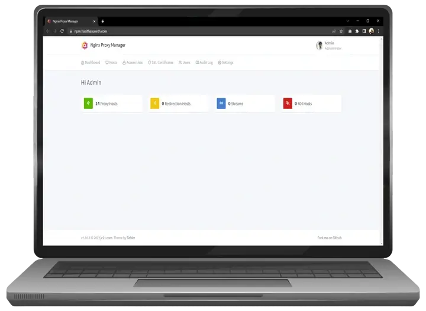
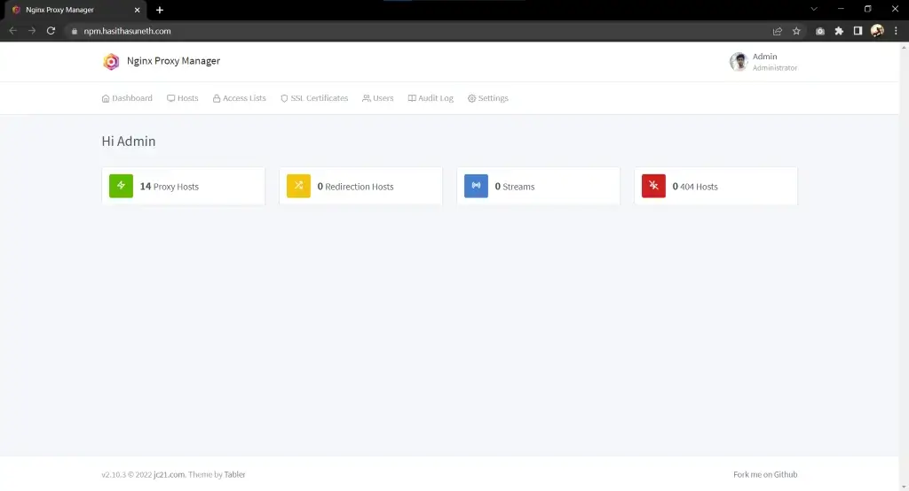
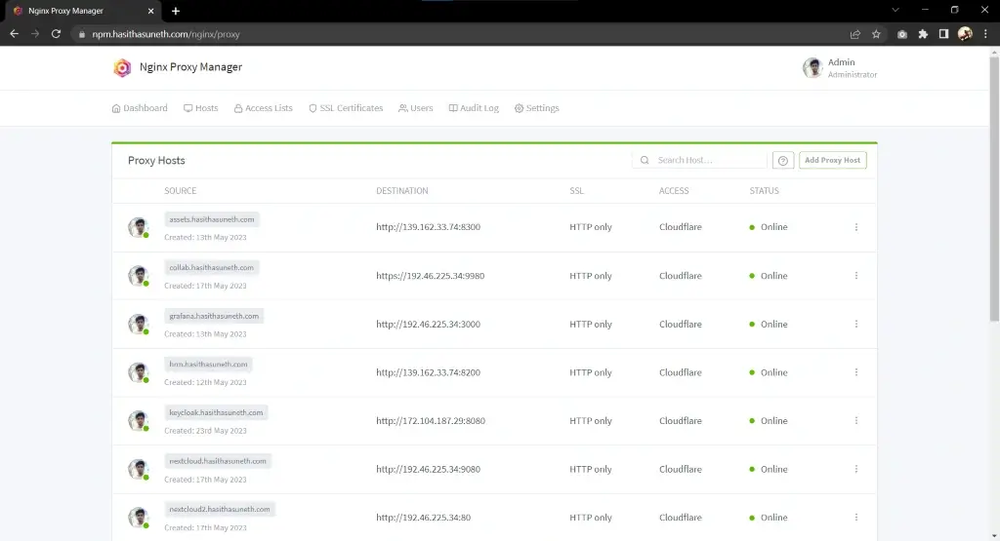
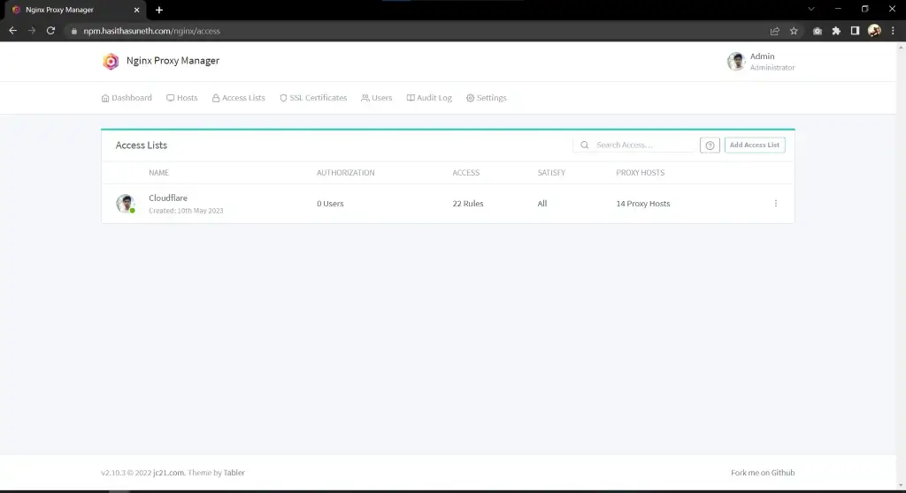
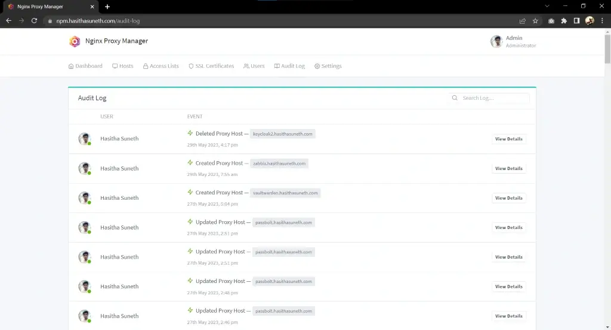

Nginx Proxy Manager Deployment
Nginx Proxy Manager is a user-friendly, web-based tool for managing Nginx reverse proxies, SSL certificates, and access controls with ease.
Table of contents
What is Nginx Proxy Manager?
Nginx Proxy Manager (NPM) is a user-friendly, web-based interface for managing reverse proxies powered by Nginx. It simplifies the process of configuring and managing proxies, making it accessible even for users with minimal technical experience. Key features include:
- Reverse Proxy Management: Easily route traffic to different backend services based on domain names or paths.
- SSL Management: Automates the issuance and renewal of SSL/TLS certificates via Let’s Encrypt for secure connections.
- Access Control: Allows you to set up basic authentication and control access to your services.
- Customizable Configuration: Supports advanced Nginx features for tailored setups.
- Easy-to-Use Interface: Intuitive dashboard for managing domains, SSL certificates, and proxy rules.
Nginx Proxy Manager is ideal for small to medium-sized setups, such as self-hosted applications, where ease of use and quick deployment are priorities. It bridges the gap between Nginx’s robust functionality and a beginner-friendly experience.

In this tutorial, we are going to install Nginx Proxy Manager with the Docker Compose.
Steps to follow
- Install Docker, and Docker-Compose
- Deploy Nginx Proxy Manager
Install Docker, and Docker-Compose
Docker Engine is an open source containerization technology for building and containerizing your applications. Docker Engine acts as a client-server application with:
- A server with a long-running daemon process dockerd.
- APIs which specify interfaces that programs can use to talk to and instruct the Docker daemon.
- A command line interface (CLI) client docker.
The CLI uses Docker APIs to control or interact with the Docker daemon through scripting or direct CLI commands. Many other Docker applications use the underlying API and CLI. The daemon creates and manage Docker objects, such as images, containers, networks, and volumes.
Install Docker Engine
Official
Note
Find the official guide here. Follow this official guide for install Docker on other Linux distribution systems.
1. Uninstall old versions
sudo apt-get remove docker docker-engine docker.io containerd runc
2. Set up the repository
Update the apt package index and install packages to allow apt to use a repository over HTTPS:
sudo apt-get update sudo apt-get install ca-certificates curl gnupg lsb-release
Add Docker’s official GPG key:
sudo mkdir -m 0755 -p /etc/apt/keyrings curl -fsSL https://download.docker.com/linux/ubuntu/gpg | sudo gpg --dearmor -o /etc/apt/keyrings/docker.gpg
Use the following command to set up the repository:
echo \ "deb [arch=$(dpkg --print-architecture) signed-by=/etc/apt/keyrings/docker.gpg] https://download.docker.com/linux/ubuntu \ $(lsb_release -cs) stable" | sudo tee /etc/apt/sources.list.d/docker.list > /dev/null
3. Install Docker Engine
sudo apt-get update sudo apt-get install docker-ce docker-ce-cli containerd.io
Verify that the Docker Engine is installed correctly.
sudo systemctl is-active docker
Install Docker-Compose
In this case (29/12/2024), it is v2.31.0; Refer to the GitHub Releases to identify the latest version.
Download and install Compose standalone latest version
curl -SL https://github.com/docker/compose/releases/download/v2.31.0/docker-compose-linux-x86_64 -o /usr/local/bin/docker-compose sudo chmod +x /usr/local/bin/docker-compose
Verify that the Docker-Compose is installed correctly.
sudo docker-compose --version
Add your linux user to the Docker group (*optional)
sudo usermod -aG docker $USER
Deploy Nginx Proxy Manager
Important
Please note, that
DB_MYSQL_*environment variables will take precedent overDB_SQLITE_*variables. So if you keep the MySQL variables, you will not be able to use SQLite.
Create a new file docker-compose.yml file.
Using SQLite Database
version: '3.8'
services:
app:
image: 'jc21/nginx-proxy-manager:latest'
restart: unless-stopped
ports:
# These ports are in format <host-port>:<container-port>
- '80:80' # Public HTTP Port
- '443:443' # Public HTTPS Port
- '81:81' # Admin Web Port
# Add any other Stream port you want to expose
# - '21:21' # FTP
# Uncomment the next line if you uncomment anything in the section
# environment:
# Uncomment this if you want to change the location of
# the SQLite DB file within the container
# DB_SQLITE_FILE: "/data/database.sqlite"
# Uncomment this if IPv6 is not enabled on your host
# DISABLE_IPV6: 'true'
volumes:
- ./data:/data
- ./letsencrypt:/etc/letsencrypt
Using MySQL / MariaDB Database
version: '3.8'
services:
app:
image: 'jc21/nginx-proxy-manager:latest'
restart: unless-stopped
ports:
# These ports are in format <host-port>:<container-port>
- '80:80' # Public HTTP Port
- '443:443' # Public HTTPS Port
- '81:81' # Admin Web Port
# Add any other Stream port you want to expose
# - '21:21' # FTP
environment:
# Mysql/Maria connection parameters:
DB_MYSQL_HOST: "db"
DB_MYSQL_PORT: 3306
DB_MYSQL_USER: "npm"
DB_MYSQL_PASSWORD: "npm"
DB_MYSQL_NAME: "npm"
# Uncomment this if IPv6 is not enabled on your host
# DISABLE_IPV6: 'true'
volumes:
- ./data:/data
- ./letsencrypt:/etc/letsencrypt
depends_on:
- db
db:
image: 'jc21/mariadb-aria:latest'
restart: unless-stopped
environment:
MYSQL_ROOT_PASSWORD: 'npm'
MYSQL_DATABASE: 'npm'
MYSQL_USER: 'npm'
MYSQL_PASSWORD: 'npm'
MARIADB_AUTO_UPGRADE: '1'
volumes:
- ./mysql:/var/lib/mysql
Start the Nginx Proxy Manager
docker-compose up -d
# check the container status
docker-compose ps
Login to the web UI of NGINX proxy manager
Default Admin User:
Username: admin@example.com
Password: changeme
Now you can log in to the web UI. Simply use your browser to connect to your server by using the IP address or an FQDN and connect on port 81. Log in with the username admin@example.com and the password changeme.
Next, you should change your username and password, and that’s it!
Screenshots



